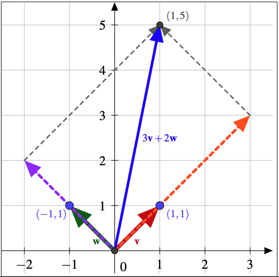
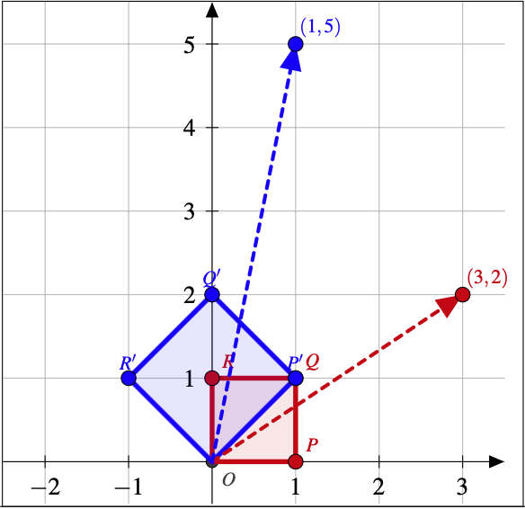
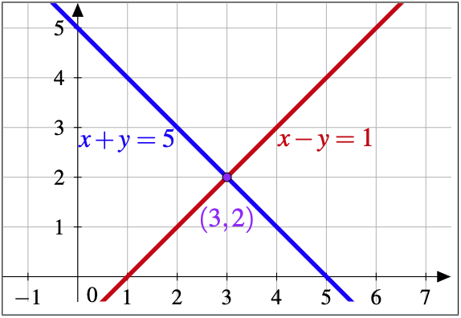
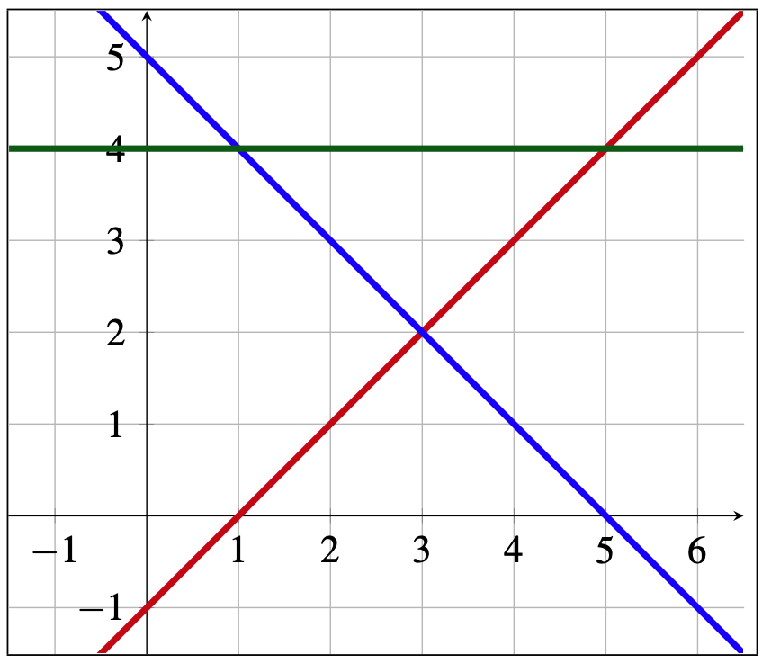

Lesson 4.1 Solution Sets as Intersection
In a variety of contexts, we have encountered matrix equations of the form
\(A\vect{x}=\vect{b}\text{,}\) where up to this point, typically the matrix
\(A\) and servings vector
\(\vect{x}\) are
known and we
find the new mixture vector
\(\vect{b}\text{.}\) We now focus our attention on the reverse situation where we
know the matrix
\(A\) and mixture vector
\(\vect{b}\) and wish to find a servings vector
\(\vect{x}\) that satisfies the matrix equation
\(A\vect{x}=\vect{b}\text{.}\) We call such a vector a
solution vector to the matrix equation and the set of all such vectors is its
solution set, denoted
\(\text{Sol}(A,\vect{b})\text{.}\) In this lesson we revisit and reconceptualize solution sets.
Before analyzing the general situation, we specialize and look at small matrices. For the moment, consider the matrix equation
\(A\vect{x}=\vect{b}\) where
\(A=[\vect{v} \mid \vect{w}]=\begin{bmatrix}a\amp b\\c\amp d\end{bmatrix}\) is a
\(2\times 2\) matrix,
\(\vect{b}=\begin{bmatrix}p\\q\end{bmatrix}\in \mathbb{R}^2\) is a
known vector, and we want to
find a solution
\(\vect{x}=\begin{bmatrix}x\\y\end{bmatrix}\in \mathbb{R}^2\text{.}\)
In the context of our two meanings of matrix multiplication, this means a solution vector is:
-
A servings vector to make
\(\vect{b}\) as a linear combination of vectors
\(\vect{v}\) and
\(\vect{w}\text{.}\)
-
A point that the transformation
\(\vect{x}\mapsto A\vect{x}\) sends to
\(\vect{b}\text{.}\)
It is time to introduce a third conceptualization that is productive in analyzing the solution set to a matrix equation. The expression
\(A\vect{x}=\vect{b}\) can be expanded as
\(\begin{bmatrix} ax+by\\cx+dy\end{bmatrix} = \begin{bmatrix} p\\q\end{bmatrix}\text{.}\) For these two vectors to be equal, each of the corresponding entries must be equal. This means
\(x\) and
\(y\) must satisfy
both \(ax+by=p\) and \(cx+dy=q\text{.}\) Each equation imposes an algebraic
constraint on the entries of a servings vector for it to be a solution set vector for the matrix equation.
Observe these algebraic constraints are the normal equations of lines! To satisfy one such equation is to say that the servings vector lies on the line, and hence, to satisfy both, is to say that the servings vector lies in their intersection. Hence a vector
\(\vect{x}\) that satisfies
\(A\vect{x}=\vect{b}\) is:
-
A point in the intersection of the system of lines:
\begin{equation*}
\begin{cases} ax+by=p,\\ cx+dy=q. \end{cases}
\end{equation*}
Example 4.1.1. Three Meanings of Solution Set.
A vector
\(\begin{bmatrix}x\\y\end{bmatrix}\) that satisfies
\(\begin{bmatrix}1\amp -1\\1\amp 1\end{bmatrix}\begin{bmatrix}x\\y\end{bmatrix}=\begin{bmatrix}1\\5\end{bmatrix}\) can be conceptualized as:
-
(Mixture) A servings vector to make
\(\begin{bmatrix}1\\5\end{bmatrix}\) as a combination of
\(\begin{bmatrix}1\\1\end{bmatrix}\) and
\(\begin{bmatrix}-1\\1\end{bmatrix}\text{.}\)
-
(Transformation) A point that the transformation
\(\begin{bmatrix}x\\y\end{bmatrix}\mapsto\begin{bmatrix}1\amp -1\\1\amp 1\end{bmatrix}\begin{bmatrix}x\\y\end{bmatrix}\) sends to
\(\begin{bmatrix}1\\5\end{bmatrix}\text{.}\)
-
(Intersection) A point in the intersection of the lines:
\begin{equation*}
\begin{cases} x-y=1\\ x+y=5 \end{cases}
\end{equation*}
Example 4.1.2. Interpretations Relative to the Three Meanings.
Continuing
Example 4.1.1, I now analyze the solution set to the equation
\(\begin{bmatrix}1\amp -1\\1\amp 1\end{bmatrix}\begin{bmatrix}x\\y\end{bmatrix}=\begin{bmatrix}1\\5\end{bmatrix}\text{.}\) Observe that the two lines intersect at
\(x=3\) and
\(y=2\text{.}\) I now
interpret this relative to each of our 3 meanings.
Meaning 1: Mixture. The servings necessary to write
\(\begin{bmatrix}1\\5\end{bmatrix}\) as a linear combination of vectors
\(\begin{bmatrix}1\\1\end{bmatrix}\) and
\(\begin{bmatrix}-1\\1\end{bmatrix}\) are
\(3\) and
\(2\text{,}\) respectively.

Solution set as finding unknown scalars.
Meaning 2: Transformation. The transformation of the plane
\(\begin{bmatrix}x\\y\end{bmatrix}\mapsto\begin{bmatrix}1\amp -1\\1\amp 1\end{bmatrix}\begin{bmatrix}x\\y\end{bmatrix}\) is a rotation of the plane by
\(45^\circ\) counterclockwise, together with a uniform stretch by a factor of
\(\sqrt{2\)} in all directions. The point that gets sent to
\((1,5)\) under this transformation is
\((3,2)\text{.}\)

Solution set as finding the unknown input.
Meaning 3: Intersection. The lines
\(x+y=5\) and
\(x-y=1\) intersect at the point
\((3,2)\text{.}\)

Solution set as intersecting lines in
\(\R^2\text{.}\)
Now consider the matrix equation
\(A\vect{x}=\vect{b}\) where
\(A=\begin{bmatrix}a\amp b\amp c\\d\amp e\amp f\end{bmatrix}\) is a
\(2\times 3\) matrix,
\(\vect{b}=\begin{bmatrix}p\\q\end{bmatrix}\in \mathbb{R}^2\) is a
known vector, and we want to
find a solution
\(\vect{x}=\begin{bmatrix}x\\y\\z\end{bmatrix}\in \mathbb{R}^3\text{.}\) The expression
\(A\vect{x}=\vect{b}\) can be expanded as
\(\begin{bmatrix} ax+by+cz\\dx+ey+fz\end{bmatrix} = \begin{bmatrix} p\\q\end{bmatrix}\text{.}\) For these two vectors to be equal, each of the corresponding entries must be equal. This means
\(x\text{,}\) \(y\text{,}\) and
\(z\) must satisfy
both \(ax+by+cz=p\) and \(dx+ey+fz=q\text{.}\) Each equation imposes an algebraic
constraint on the entries of a servings vector for it to be a solution set vector for the matrix equation.
Observe these algebraic constraints are the normal equations of planes! For a vector to satisfy one such equation is to say that it lies on the plane, and hence, to satisfy both, is to say that the vector lies in both planes at the same time. Hence a vector \(\vect{x}\) that satisfies \(A\vect{x}=\vect{b}\) is a point in the intersection of the system of planes:
\begin{equation*}
\begin{cases} ax+by+cz=p,\\ dx+ey+fz=q. \end{cases}
\end{equation*}
Example 4.1.3. Three Meanings of Solution Set.
A vector
\(\begin{bmatrix}x\\y\\z\end{bmatrix}\) that satisfies
\(\begin{bmatrix}1\amp 2\amp 3\\3\amp -1\amp 2\end{bmatrix}\begin{bmatrix}x\\y\\z\end{bmatrix}=\begin{bmatrix}6\\4\end{bmatrix}\) can be conceptualized as:
-
(Mixture) A servings vector to make
\(\begin{bmatrix}6\\4\end{bmatrix}\) as a combination of
\(\begin{bmatrix}1\\3\end{bmatrix}\text{,}\) \(\begin{bmatrix}2\\-1\end{bmatrix}\text{,}\) and
\(\begin{bmatrix}3\\2\end{bmatrix}\text{.}\)
-
(Transformation) A point that the transformation
\(\begin{bmatrix}x\\y\\z\end{bmatrix}\mapsto\begin{bmatrix}1\amp 2\amp 3\\3\amp -1\amp 2\end{bmatrix}\begin{bmatrix}x\\y\\z\end{bmatrix}\) sends to
\(\begin{bmatrix}6\\4\end{bmatrix}\text{.}\)
-
(Intersection) A point in the intersection of the planes:
\begin{equation*}
\begin{cases} x+2y+3z=6\\ 3x-y+2z=4 \end{cases}
\end{equation*}
Example 4.1.4. Interpretations Relative to the Three Meanings.
Meaning 3 allows us to find the solution set. Using GeoGebra, we can plot the planes and we can see that its intersection is a line. We can read off an initial position and velocity, and conclude it is the line \(\ell\subset \mathbb{R}^3\) with parametric vector form:
\begin{equation*}
\ell=\left\{\begin{bmatrix}0\\0\\2\end{bmatrix}+t \begin{bmatrix}1\\1\\-1\end{bmatrix}\ \bigg| \ t\in\mathbb{R}\right\}.
\end{equation*}
Interpreting this solution relative to the three meanings:
-
(Mixture) For any \(t\in \mathbb{R}\text{,}\) we mix:
\begin{equation*}
t\begin{bmatrix}1\\3\end{bmatrix}+t\begin{bmatrix}2\\-1\end{bmatrix}+(2-t)\begin{bmatrix}3\\2\end{bmatrix}=\begin{bmatrix}6\\4\end{bmatrix}.
\end{equation*}
-
(Transformation) Under the transformation
\(T\text{,}\) the whole line
\(\ell\) is sent to
\(\begin{bmatrix}6\\4\end{bmatrix}\text{.}\)
-
(Intersection) The line \(\ell\) is the intersection of the planes:
\begin{equation*}
\begin{cases} x+2y+3z=6\\ 3x-y+2z=4 \end{cases}
\end{equation*}
We now generalize to a matrix equation \(A\vect{x}=\vect{b}\) where \(A\) is \(m \times n\text{.}\) The matrix equation can be written using its entries as
\begin{equation*}
\begin{bmatrix}
a_{11}\amp a_{12}\amp \cdots\amp a_{1n}\\
a_{21}\amp a_{22}\amp \cdots\amp a_{2n}\\
\vdots\amp \vdots\amp \ddots\amp \vdots\\
a_{m1}\amp a_{m2}\amp \cdots\amp a_{mn}
\end{bmatrix}
\begin{bmatrix}x_{1}\\x_{2}\\ \vdots \\ x_{n}\end{bmatrix}
=\begin{bmatrix}b_{1}\\b_{2}\\ \vdots \\ b_{m}\end{bmatrix},
\end{equation*}
which can be expanded to
\begin{equation*}
\begin{bmatrix}
a_{11}x_1+a_{12}x_2+\cdots+ a_{1n}x_n\\
a_{21}x_1+a_{22}x_2+\cdots+ a_{2n}x_n\\
\vdots \\
a_{m1}x_1+a_{m2}x_2+\cdots+ a_{mn}x_n
\end{bmatrix}
=\begin{bmatrix}b_{1}\\b_{2}\\ \vdots \\ b_{m}\end{bmatrix}.
\end{equation*}
Two vectors are equal if and only if their entries are equal and hence a solution vector must satisfy each of the following equations:
\begin{equation*}
\begin{cases}
a_{11}x_1+a_{12}x_2+\cdots +a_{1n}x_n=b_1,\\
a_{21}x_1+a_{22}x_2+\cdots +a_{2n}x_n=b_2,\\
\hspace{5pc}\vdots\\
a_{m1}x_1+a_{m2}x_2+\cdots +a_{mn}x_n=b_m
\end{cases}
\end{equation*}
Observe that each equation places a
linear constraint on solution vectors. The set of points that satisfy such a linear constraint are called hyperplanes.
Definition 4.1.5. Hyperplane.
The set of points in \(\mathbb{R}^n\) that satisfy a linear constraint is a hyperplane in \(\mathbb{R}^n\text{.}\) In symbols,
\begin{equation*}
H = \{\vect{x}\in\mathbb{R}^n \mid a_1x_1+a_2x_2+\cdots +a_nx_n=b \text{, where at least one } a_i\ne0\}.
\end{equation*}
Such a linear constraint equation is a normal equation for that hyperplane.
A hyperplane in
\(\mathbb{R}^2\) is a line and a hyperplane in
\(\mathbb{R}^3\) is a plane.
Proposition 4.1.6.
A hyperplane is an
\((n-1)\)-plane.
To prove this proposition, I will use the strategy first used in the proof of
Proposition 2.3.3 where we first substitute in the constraining equation and then use linear combinations to split the vector apart.
Proof.
Let \(H\) be a hyperplane with normal equation \(a_1x_1+ a_2x_2 + \cdots + a_nx_n = b\text{.}\) At least one of the \(a_i\)’s is nonzero. I will prove the proposition when \(a_1\ne0\text{,}\) and leave for you the case where \(a_1=0\text{.}\) The normal equation is algebraically equivalent to
\begin{equation*}
x_1 = \frac{b}{a_1}- \frac{a_2}{a_1}x_2 - \cdots - \frac{a_n}{a_1}x_n.
\end{equation*}
Pick a point \(\vect{x}\in H\) and look at its column:
\begin{equation*}
\begin{bmatrix}x_1\\x_2\\x_3\\ \vdots \\ x_n\end{bmatrix}
= \begin{bmatrix}\frac{b}{a_1}- \frac{a_2}{a_1}x_2 - \cdots - \frac{a_n}{a_1}x_n\\x_2\\x_3\\ \vdots \\ x_n\end{bmatrix}
= \begin{bmatrix}\frac{b}{a_1}\\0\\0\\ \vdots \\ 0\end{bmatrix}
+ x_2\begin{bmatrix}-\frac{a_2}{a_1}\\1\\0\\ \vdots \\ 0\end{bmatrix}
+ x_3\begin{bmatrix}-\frac{a_3}{a_1}\\0\\1\\ \vdots \\ 0\end{bmatrix}
+ \cdots
+ x_n\begin{bmatrix}-\frac{a_n}{a_1}\\0\\0\\ \vdots \\ 1\end{bmatrix}.
\end{equation*}
Observe that the last
\((n-1)\) vectors are separated, and hence independent (
Proposition 2.5.8).
In the definition of hyperplane, we require at least one of the
\(a_i\)’s to be nonzero. If all the
\(a_i\)’s are zero, we still get a constraining equation, but the set of all points that satisfy them are not hyperplanes. Let’s quickly go over the two cases.
First, observe that the zero equation
\begin{equation*}
0x_1+0x_2+\cdots +0x_n=0
\end{equation*}
places no meaningful constraint on vectors as every vector satisfies it, and hence
\begin{equation*}
\{\vect{x}\in\mathbb{R}^n \mid 0x_1+0x_2+\cdots +0x_n=0\} = \mathbb{R}^n.
\end{equation*}
On the other hand, what I call a zero-one equation (here, one can be replaced by any nonzero number and the same conclusions hold)
\begin{equation*}
0x_1+0x_2+\cdots +0x_n=1
\end{equation*}
places too alert of a constraint on vectors as no vector satisfies it, and hence
\begin{equation*}
\{\vect{x}\in\mathbb{R}^n \mid 0x_1+0x_2+\cdots +0x_n=1\} = \varnothing.
\end{equation*}
When we have many hyperplanes, as we do when analyzing a solution set, we call this a system of hyperplanes.
Definition 4.1.7. Systems of Hyperplanes.
A system of \(m\) hyperplanes in \(\mathbb{R}^n\) is a collection of \(m\)-many hyperplanes, \(H_1, H_2, \ldots, H_m\text{.}\) If we have normal forms for the equations of each hyperplane, we can represent this collection with a system of \(m\) linear equations in \(n\) variables \(x_1, \ldots, x_n\text{:}\)
\begin{equation*}
\begin{cases}
H_1: a_{11}x_1+a_{12}x_2+\cdots +a_{1n}x_n=b_1,\\
H_2: a_{21}x_1+a_{22}x_2+\cdots +a_{2n}x_n=b_2,\\
\hspace{5pc}\vdots\\
H_m: a_{m1}x_1+a_{m2}x_2+\cdots +a_{mn}x_n=b_m
\end{cases}
\end{equation*}
where \(a_{ij}, b_i\in \mathbb{R}\text{.}\)
Hyperplanes live in the set of servings vectors. A solution vector to
\(A\vect{x}=\vect{b}\) must satisfy each of the constraints from
(), so it lies on each hyperplane.
Definition 4.1.8. Intersection.
If
\(H_1, \ldots, H_m\subset \mathbb{R}^n\) are hyperplanes, then a point
\(\vect{x}\) lies in their
intersection if it lies on each hyperplane
\(H_1, \ldots, H_m\text{.}\) In symbols, we then write
\(\vect{x} \in (H_1\cap \cdots \cap H_m)\text{.}\)
Activity 4.1.9.
Describe the intersection of the system of three lines depicted below.

A 2D coordinate system plotting three intersecting lines: a red line y = x - 1, a blue line y = 5 - x, and a green horizontal line y = 4.
In
Lesson 4.3, we will develop an efficient algorithm for finding these intersections.
Example 4.1.11.
Consider the matrix equation:
\begin{equation*}
\begin{bmatrix}
1\amp 1\amp 1\amp 1\\
1\amp 2\amp 3\amp 4\\
5\amp 6\amp 7\amp 8
\end{bmatrix}
\begin{bmatrix}x_1\\x_2\\x_3\\x_4\end{bmatrix}=\begin{bmatrix}2\\4\\12\end{bmatrix}.
\end{equation*}
Via Solution Set Meaning #3, the solution set is the collection of all points in \(\mathbb{R}^4\) that lie in the intersection of the 3 hyperplanes in \(\mathbb{R}^4\text{:}\)
\begin{equation*}
\begin{cases}
x_1+x_2+x_3+x_4=2\\
x_1+2x_2+3x_3+4x_4=4\\
5x_1+6x_2+7x_3+8x_4=12
\end{cases}
\end{equation*}
Example 4.1.12.
If
-
\(A\) is a
\(18\times 37\) matrix which is
known,
-
\(\vect{b}\in \mathbb{R}^{18}\) is
known, and
-
\(\vect{x}\in \mathbb{R}^{37}\) is
unknown,
then the solution set, \(\text{Sol}(A,\vect{b})\text{,}\) for the matrix equation \(A\vect{x}=\vect{b}\) means:
-
(Mixture) The servings vectors in
\(\mathbb{R}^{37}\) to make
\(\vect{b}\) with the columns of
\(A\text{.}\)
-
(Transformation) The points in
\(\mathbb{R}^{37}\) that the transformation
\(T_A\) sends to
\(\vect{b}\text{.}\)
-
(Intersection) The intersection in
\(\mathbb{R}^{37}\) of the system of 18 hyperplane rows of
\(A\vect{x}=\vect{b}\text{.}\)